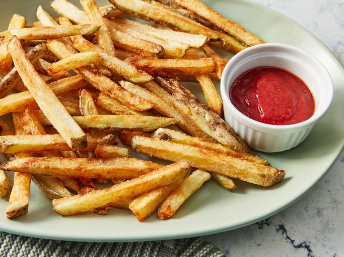

Картошка Фри

Описание
Картофель фри — хрустящие снаружи и мягкие внутри ломтики картофеля, обжаренные во фритюре. Популярный гарнир или самостоятельная закуска.
Ингредиенты
Картошка
Подсолнечное масло
Соль
Шаги
1. Замочите полоски картофеля в большой миске с водой примерно на 30 минут.
2. Промокните бумажными полотенцами до полного высыхания.
3. Разогрейте масло во фритюрнице или большой кастрюле до 135 градусов Цельсия. Аккуратно добавьте картофель в горячее масло и жарьте около 5 минут, периодически помешивая и переворачивая.
4. Шумовкой переложите картофель на тарелку, застеленную бумажными полотенцами. Дайте полностью остыть.
5. Снова разогрейте масло, но на этот раз до 175 градусов Цельсия. Добавьте картофель и жарьте второй раз до золотисто-коричневого цвета, 5-6 минут.
6. Выньте из фритюрницы и промокните бумажным полотенцем. Посыпьте солью перед подачей.
7. Приятного аппетита!